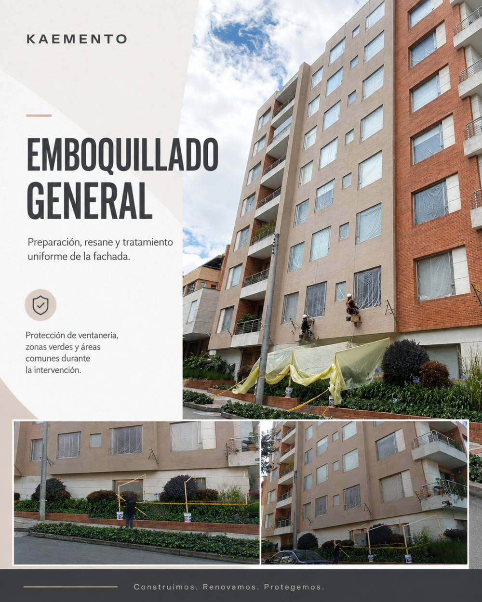
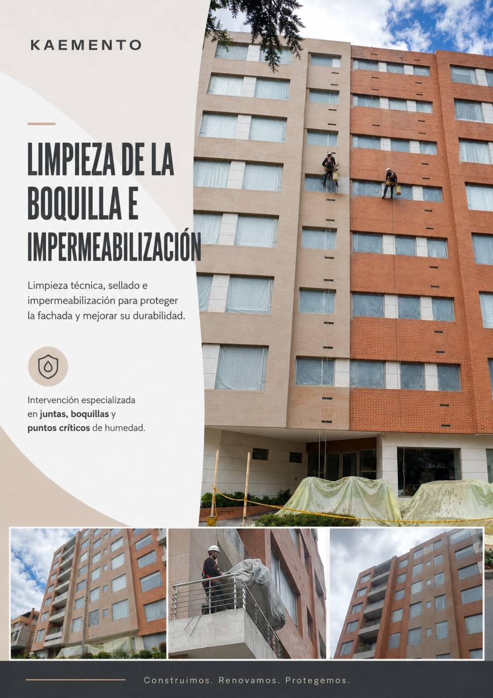
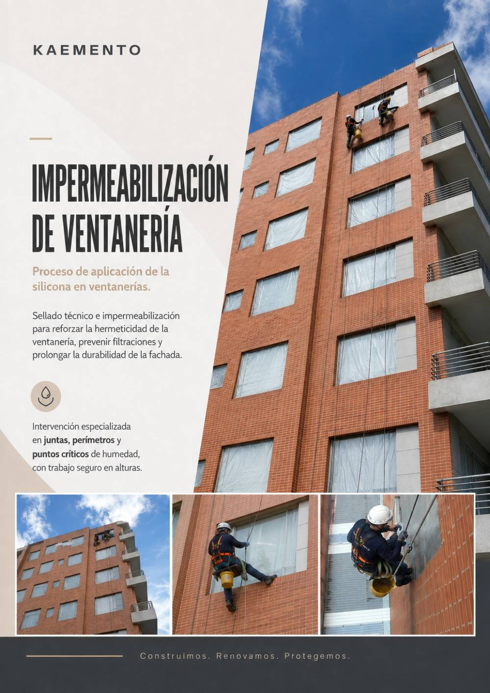
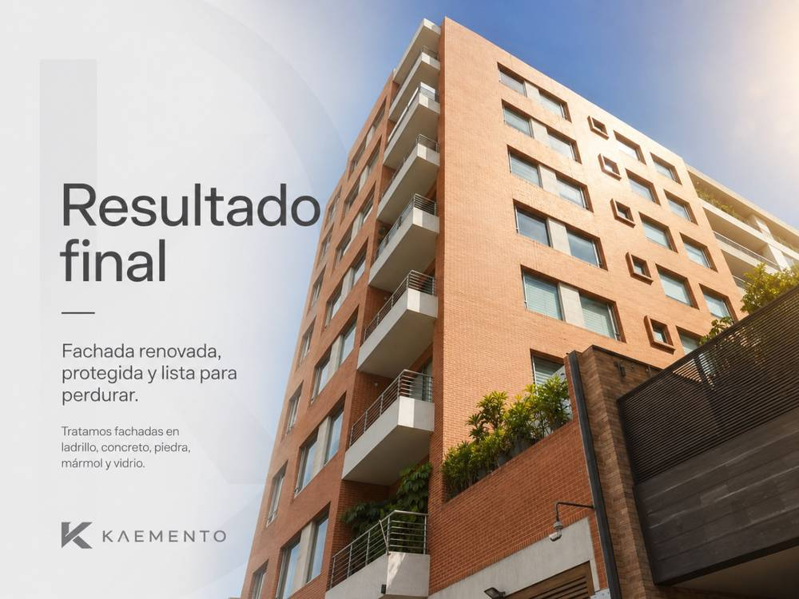
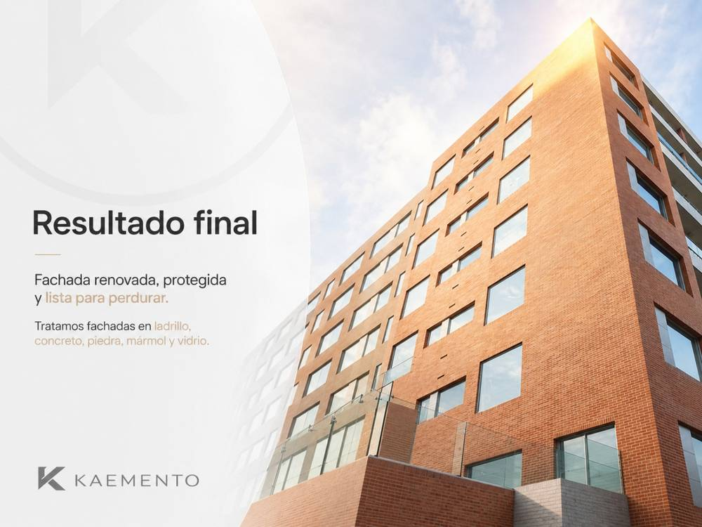

Evaluación
Revisamos el soporte y la necesidad.
FACHADAS
Sistema para recuperar, sellar y proteger fachadas frente a lluvia, humedad e intemperie.

SOLUCIÓN KAEMENTO
Permite tratar juntas, fisuras y deterioros, recuperar la apariencia de la fachada e incorporar protección hidrófuga para prolongar la vida útil del acabado.
PASO A PASO
Revisamos el soporte y la necesidad.
Acondicionamos la superficie.
Ejecutamos el sistema especificado.
Finalizamos y verificamos el desempeño.
MANTENIMIENTO DE FACHADAS
Comenzamos con el diagnóstico del soporte y la preparación de las zonas a intervenir. Façade Protect integra el cuidado de juntas, superficies y encuentros para una fachada mejor protegida.

Después del diagnóstico y la preparación, intervenimos las juntas que requieren recuperación.

Acondicionamos y protegemos la superficie según el material y su exposición.

Los encuentros y puntos singulares forman parte de una protección integral.

Recuperación de la apariencia y protección de las superficies intervenidas.

La revisión final integra juntas, paños y encuentros de la fachada.
REGISTRO DEL PROCESO
Una mirada complementaria al trabajo de recuperación, protección y mantenimiento de fachada. Cada etapa parte del diagnóstico del soporte y de sus necesidades de mantenimiento.
INFORMACIÓN CLAVE
Desempeño integrado dentro del sistema.
Aplicación definida según soporte y uso.
Acompañamiento técnico KAEMENTO.
No recomendamos seleccionar una capa o producto de forma aislada sin revisar el soporte y el uso final. La preparación, dosificación, aplicación y curado forman parte del desempeño.
PREGUNTAS FRECUENTES
La compatibilidad depende del soporte, su estabilidad, humedad, absorción y uso final. Recomendamos una evaluación previa y seguir la ficha o manual correspondiente.
No. El desempeño de cualquier sistema depende de una base limpia, firme, estable y correctamente preparada.
Sí. KAEMENTO ofrece orientación para seleccionar el sistema, entender la aplicación y reducir errores en obra.
ASESORÍA KAEMENTO